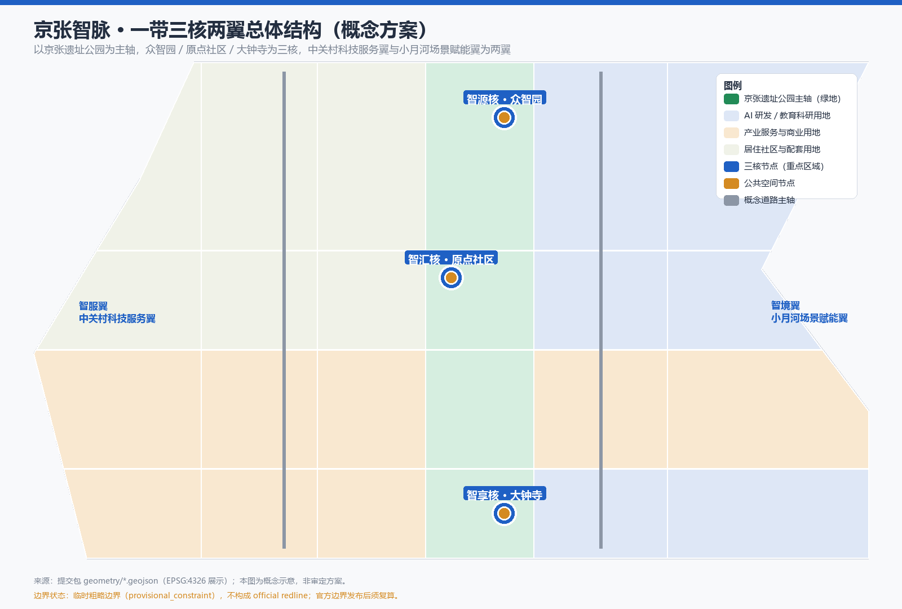
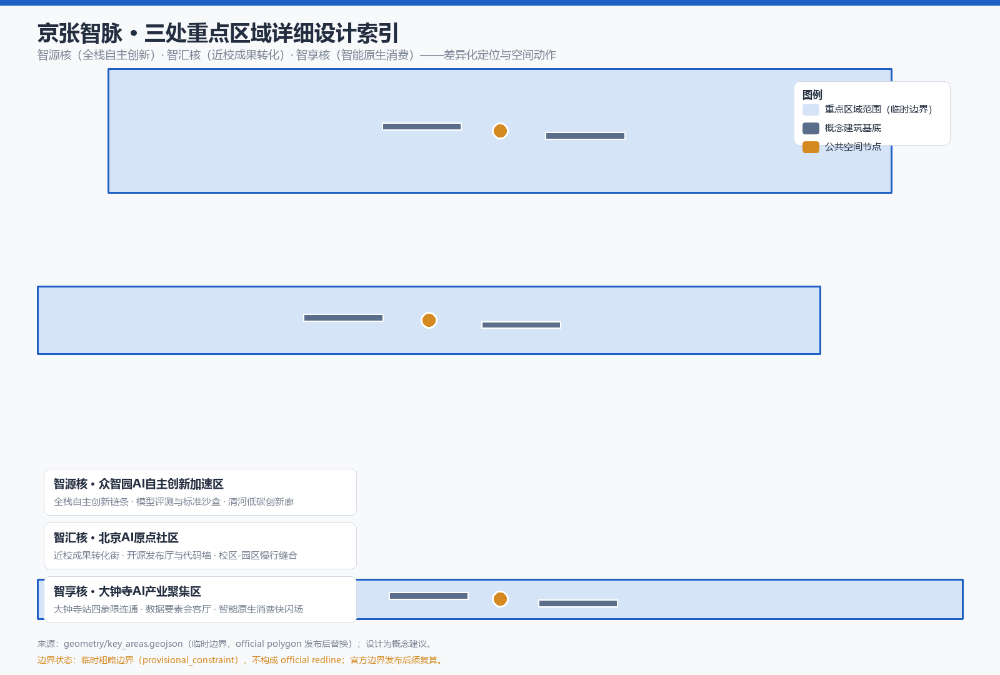
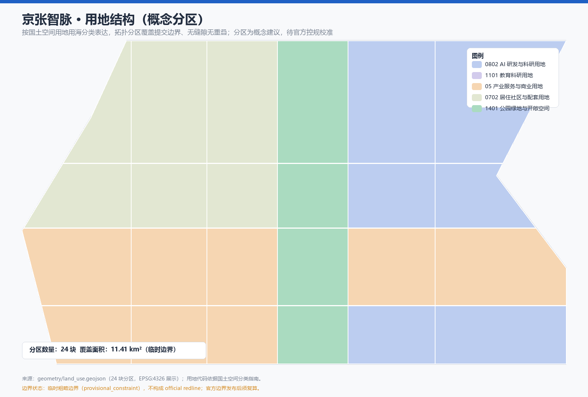
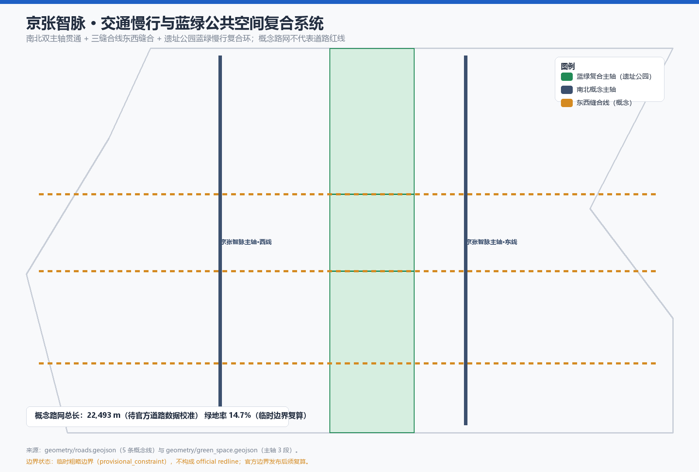
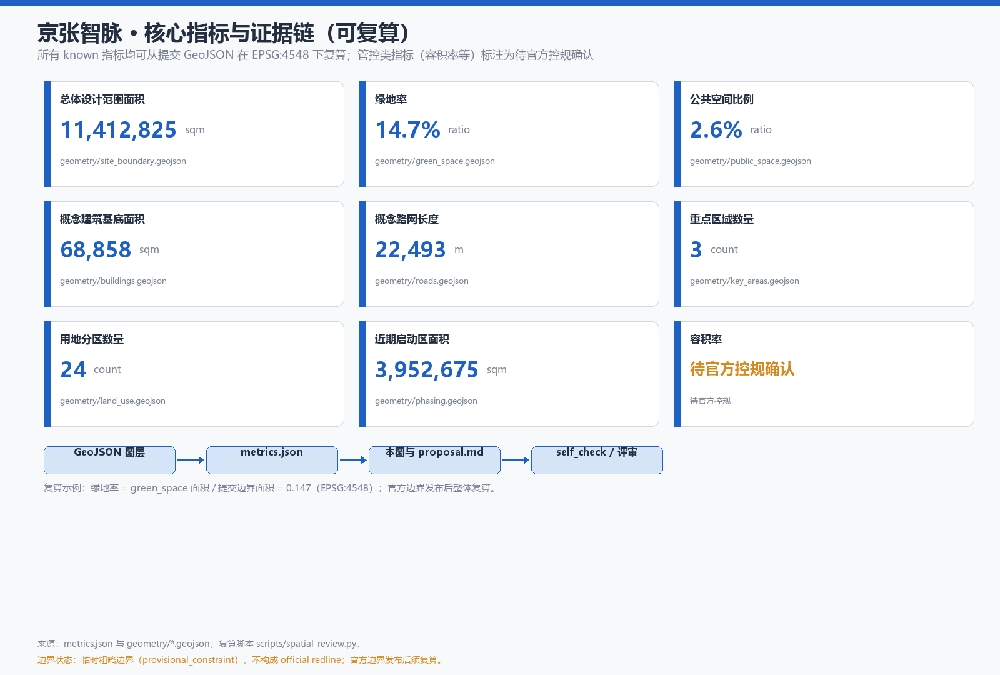

总览地图 · 一带三核两翼

三层范围
统筹研究范围
总体设计范围
重点区域范围
重点区域

用地分区 · 交通慢行 · 蓝绿公共空间


建筑与更新项目
概念建筑基底 6 处（置信度 low，示意性表达，不代表现状或审批方案）；更新项目清单 12 项（JZ-01 至 JZ-12），覆盖慢行缝合、清河界面、成果转化街、四象限连通、智脉广场、评测沙盒、机器人共行示范线、AI 生活样板街、活动周路线、荣誉展示与端侧算力节点。
AI 场景与任务覆盖
AI 场景：12 张场景卡（开源发布厅、安全治理沙盒、端侧算力驿站、AI 慢行导航、国际路演客厅、清河低碳创新廊、近校成果转化街、数据要素会客厅、AI 生活服务样板街、全球 AI 活动周路线、机器人低速配送示范线、智能原生消费快闪场）；3 个产业测试验证场景（模型评测与标准沙盒、低速配送与机器人共行、交通慢行 AI 评估）；6 类用户画像（开源开发者、初创团队、头部企业访客、周边居民、高校师生、国际访客与开发者社区）。
| 任务 | 内容 | 本方案对应 | 状态 |
|---|---|---|---|
| agent.1 | 一带总体概念与功能统筹 | 京张智脉命名体系、Logo 方向、三区两翼回路、总体空间结构 | 已覆盖 |
| agent.2 | AI 全栈自主创新体系与全球生态 | 7 个全球案例、生态图谱、众智园全栈链条、要素机制 | 已覆盖 |
| agent.3 | AI+ 场景与智能化活力城市 | 12 场景卡、3 测试场景、6 画像、场景-空间-运营映射 | 已覆盖 |
| agent.4 | AI 公共空间、新业态与朝圣地标 | 4 个朝圣地标、荣誉展示体系、公共空间组件库 | 已覆盖 |
| agent.5 | 三文化融合叙事 | 人字铁路→中关村→AI 新文化三线叙事、导视符号系统、国际传播 | 已覆盖 |
| agent.6 | 全球 AI 创新活动体系与长期运营 | 周-月-季-年活动体系、开发者社区、场景开放运营、转化路径 | 已覆盖 |
核心指标

任务覆盖 · 自检状态 · 来源 · 假设
任务覆盖
公告 1.3 / 1.4 / 1.5 与 agent.1–agent.6 全部必选任务在 compliance_matrix.json 中逐条映射到章节、图层、指标、图纸、HTML 与自检项。
自检状态
确定性校验：PASS · 空间复核：PASS（仅 3 条 minor：重点区域为临时边界）· 视觉包装检查：PASS · 专业证据复核：PASS。正式评审前须等待官方边界与重点区 polygon 并整体复算。
来源
资格预审公告（北京市规划和自然资源委员会海淀分局）、Agent 开源征集任务书（清权摘要）、公开标准（城市设计管理办法、控规编制审批办法、国土空间用地用海分类指南）、临时粗略边界（仓库维护者登记）。全部记录见 sources.json 与 source_registry。
假设
提交边界与重点区为临时粗略边界；控规、道路红线、权属、市政与工程条件缺失，相关结论一律列为待确认事项；概念建筑与路网不代表现状或审批方案；实施分期与活动体系均为概念建议。